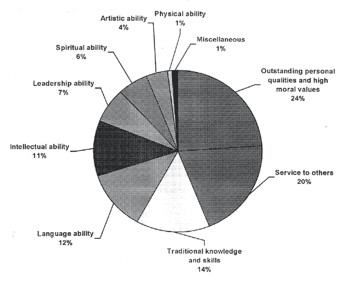

|  | |
|
NB This pie graph presents the categories of giftedness in percentages according to their frequency of mention. It should be noted that ALL abilities and qualities listed are considered to be importance. Adapted from: Bevan-Brown, J. (1996). Special abilities: A Māori Perspective. |
|